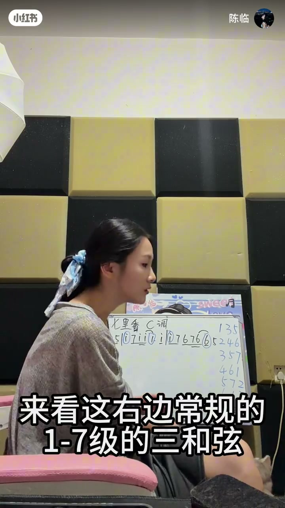
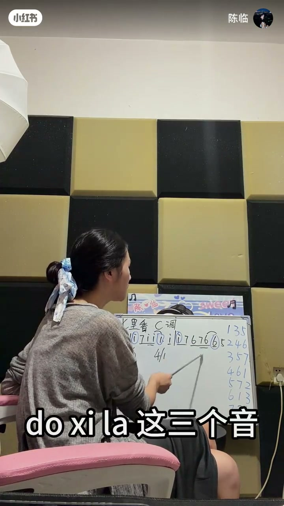
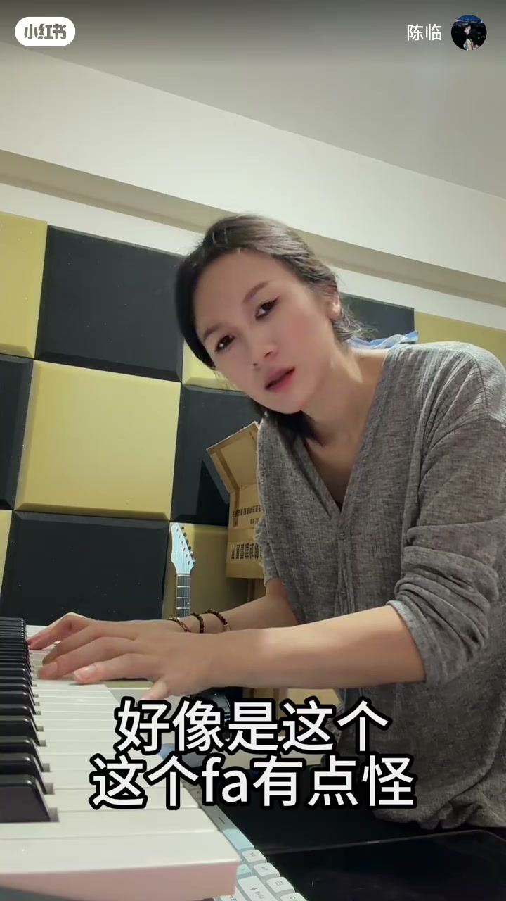
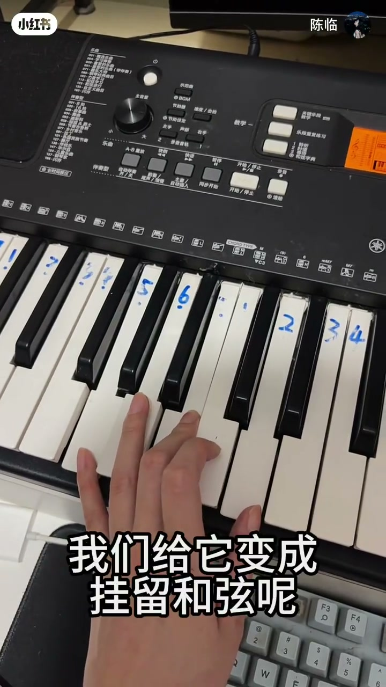

内容要点
陈临用 C 调与键盘标号，演示「按强拍旋律音在一级到七级三和弦里找重合→试听→转位／挂留改手感」。七级要改才能用；结尾反对只背网上和弦公式，主张多尝试因为喜欢。作者备注拍剪七小时、成片约七分钟。
知识结构
先看昨天音程课；用 C 调，第一拍强拍决定优先音。
旋律 do 后跟 si、la 等，看哪些音在 1–7 级和弦里出现最多。
三种转位都能用时，她个人偏爱 C 大三第二转位；高音太尖就翻下去。
可改挂留；七级特殊新手少直接用；公式不是唯一答案，多试。
配和弦=在旋律关键音上找可支撑的和弦集合，再用转位／色彩音调听感；七级谨慎；喜欢与试听优先于背公式。
00:00-01:40前置：强拍与 C 调举例
开场点题：写了旋律怎么配和弦，并提醒先看昨天视频（音程）。进入 C 调：第一拍是强拍，第二拍常是次强。白板准备「常规一到七级的三和弦」对照。
前 30 秒口播有重复噪声与空洞，以稍后白板与键盘演示为准。
01:40-03:20按旋律音在七个和弦里取交集
看第一强拍是 do，后面跟着 si、do 等——「谁比较多就取谁」。下一小节 do 后跟 si、la，发现 do/si/la 在多个和弦里都出现过；若前面已选六级、四级，后面一级到七级理论上都可接，要用耳朵筛。
方法本质是：旋律音提供约束，和弦提供候选，不是反向硬套进行公式。


03:20-05:30转位改手感：高音翻下去
演示原位与转位：变成 mi sol do、sol do mi 等。「刚刚这三种都可以，但我个人比较喜欢第二转位」。试听时觉得 fa 怪、高音 do 太高，就把高音翻到底部，变成更顺的排列。
还提到 B 小七降13、fa la do 能否直接用——能，但要听。

05:30-07:33挂留、六级可用、七级要改
把和弦改成挂留（如 5–1–2），再转位成 2–5–1 也可。六级 la do mi 因包含 do 与 la 能用，也可第一转位。七级「非常特殊」，新手尽量避免直接用；要用就改（片中出现半减七第一转位加降九等进阶写法）。
结尾明确立场：她犹豫要不要按和弦公式拍给你们看——那样很简单，但「因为你喜欢」「多尝试」「没有标准答案」。

完整转录（69段）
以下文本由 Whisper medium 模型自动转录，可能存在少量识别误差，已尽可能修正。
写了旋循律律怎么配合先首先你应该先看过昨天的视频你
就不在
他也是很很很很很很很很很很很
我们用C调来举例啊第一拍就是强拍动
那是强拍那是次强拍来看第二边常规的一到七级的三和弦
走开上课呢看第一个强拍是什么多对不对多后面跟著谁啊多后面跟了C多多
所以这里谁比较多呢
都比较多我们就取多这七个和弦里面那
这里用
我上课了你别捣乱那到第二个小节了第二个小节的多他后面跟了谁呀
跟了C和拉那你会发现多C拉这三个音是不是在所有的和弦里面都有出现过
那我们取谁呢好的朋友们假设前面两个和弦就是六级和四级
那么接下来这个和弦是不是从一级到七级都可以接来我们一起来看来你听
你怎么去
在一天先赶上可以用是不是我们也可以给他转一下位变成
在一天先赶上该变成美塑多变成所多米行不行的第二转位
在一天先干燥也可以
刚刚这三种都可以但是我个人比较喜欢第二转位C大三和弦第二转位
第一音是三音
在天线上剁嘴
欸 有一点怪 哪里怪
好像是这个
这个发有点怪
这个拉 这个多是不是太高了
这样子低一点可能会好一点
那我们把高音多转到底下来
我们给它变成多
B 索 C 略
下去在天线上剁嘴
欸 这样是不是就可以用了
B 小七降13和弦
发拉多能不能直接用
可以的
这样子是不是
我们给它变成挂留和弦呢
五一二 是不是也可以
然后我们给它转一下位
给它转成二五一
是不是也可以啊
那六级和弦拉多密能不能用
能用
又包含了多 又包含了拉
是不是
也可以怎么样
也可以给它转位
A小和弦第一转位
那七级和弦 谁会发能不能用
不能直接用
七级和弦是一个非常特殊的存在
新手尽量避免去使用它
但是能不能用呢
能用要改
B半减七和弦第一转位加降九音
所以用什么和弦
是由和弦公式决定的吗
我觉得不是这样子
这期视频其实我想录很久了
我一直在犹豫
要不要按和弦公式
拍给你们看
因为那样会很简单
当然我可以告诉你们和弦公式
但是
因为你喜欢啊
是不是你喜欢
所以多尝试
不管是和弦还是人声
都没有标准答案
你自己去试